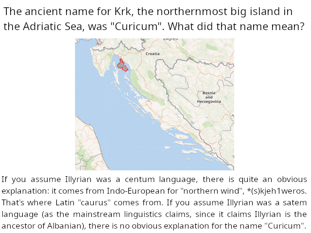
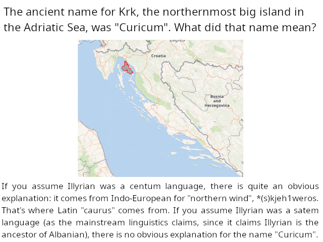

Don't use not-even-wrong arguments!
I have been debating various things on Internet forums for almost a
decade now. And one of the hardest lessons I've learned is not to use
not even wrong arguments. I want to share that lesson I've learned.
A significant percentage of the arguments used on the Internet forums are not only not right, they are also not even wrong. And while it is difficult to tell apart a right argument from a wrong one, it is not all that difficult to tell apart not even wrong arguments. Simply, before using some phenomenon as an argument against mainstream science, ask yourself, how your "theory" (I am using that word in the informal sense.) explains that phenomenon. And if you cannot give a sane answer to that question, don't use that argument.
I know this sounds confusing, so let me illustrate that with an example. Here is an example of a not-even-wrong argument:
Of course, sometimes it's hard to tell what is tu-quoque and what isn't. Proponents of Austrian School of Economics, when you point out to them that many of their teachings are apparently incompatible with basic Game Theory, often respond with: "Well, some teachings of the Keynesian economics are also hard to make compatible with Game Theory.". Is that a tu-quoque argument? Well, I think it is, primarily because the Keynesian economics is at least trying to be compatible with Game Theory. It's motivated by a problem from Game Theory that is the Paradox of Thrift. The Austrian School of Economics is not even trying to take the basic Game Theory into account. Just like with my alternative interpretation of the Croatian names of places: it's at least trying to be compatible with Information Theory. It's motivated by the fact that it seems to follow from basic Information Theory (Collision Entropy and Birthday Paradox) that this k-r pattern in the Croatian river names (Krka, Krapina, Krbavica, Kravarščica, Korana, and two rivers named Karašica) is statistically significant (that its p-value is between 1/300 and 1/17). Whether or not it succeeds at being fully compatible with Information Theory is almost irrelevant so long as mainstream onomastics is not even trying to be.
And like I've said, there are many widely-used not-even-wrong arguments. Here are some examples:
Let me be clear that I don't think it's always unreasonable to ask a question about a supposed problem with mainstream science without proposing an actual solution. I think that, in a discussion about the Illyrian language, this is an entirely reasonable question: "Why isn't the 'p' in 'Colapis' (ancient name for the Kupa river) and 'Serapia' (ancient name for the Bednja river) geminated, since 'a' was short (because -ap- is coming from *h2ep meaning 'water')? The 'n' was geminated after a short 'a' in 'Pannonia' (from *pen meaning 'marsh').". It's probably possible to have a productive conversation about that question. What would be not-even-wrong is if somebody was attempting to discredit mainstream onomastics with that question without providing an alternative etymology to Pannonia (or, less likely, to both Colapis and Serapia) that doesn't suffer from the exact same problem. Though, for some reason, even that question wasn't well-received on Quora, presumably because many people misunderstood it as an attempt to propagate a not-even-wrong argument. But, seriously, sometimes such questions work to provoke a reasonable discussion, like when I asked why the name Curicum, the ancient name for Krk, evolved into "Krk", rather than into *Krak or *Krac (depending on whether you assume the Third Slavic Palatalization occurred in Old Croatian before or after the 7th century). Maybe that question was received better because the Croatian historical phonology is a harder science than Illyrian historical phonology. But had I said "The fact that the 'k' was conserved in the phonological evolution of the name Krk, rather than turning into 'c' /ts/, proves that the Third Slavic Palatalization occurred before the 7th century, when Croatians came here.", that would probably be a not-even-wrong argument, as assuming that doesn't really explain the phonological evolution of "Krk" (Why is it not *Krak?).
And complaining that the mainstream onomastics uses methodology that seems to contradict basic information theory, like I'm doing, is not not-even-wrong, because I am suggesting a methodology that doesn't suffer from the exact same problem. Mainstream onomastics claims that this k-r pattern in the Croatian river names (Krka, Korana, Kravarščica, Krapina, Krbavica, two rivers named Karašica) is a coincidence, while basic information theory (Collision Entropy and Birthday Paradox) strongly suggests that it's statistically significant (that the probability of such a pattern occurring by chance is somewhere between 1/300 and 1/17). An obvious solution is to suppose that this k-r pattern was an Illyrian word for "to flow", or at least some prefix that was, for some reason, common in names of rivers. I have a rather detailed explanation of what I suppose happened, which you can read on my blog (Long story short, that *karr~kurr was the Illyrian for "to flow", that the river name Karašica comes from Illyrian *Kurr-urr-issia (flow-water-suffix), borrowed into Proto-Slavic as K+back-yer+r+back-yer+r+front-yer+s+front-yer+j+a, which changed to *Karrasja after the Havlik's Law and the merger of the yers into 'a', which changed to *Karaša after the iotation and the loss of geminates, to which the Croatians added their suffix -ica.). The responses to that argument saying that we should disregard the information theory and rely on "traditional methods" are probably not-even-wrong because, well, how do you justify those "traditional methods" without appealing to the information theory? Traditional methods might be viewed as non-math-intensive heuristics, which sometimes fail, and that's why we have the math-heavy information theory to correct them. In other words, traditional methods only work somewhat because information theory works well. And asking "If Illyrian was a satem language, what did Curicum, the ancient name for Krk (the northernmost big island in the Adriatic sea), mean?" is not not-even-wrong, because there is quite an obvious explanation if you assume Illyrian was a centum language: Curicum comes from Indo-European *(s)kjeh1weros (northern wind).  The difference between the examples of not-even-wrong arguments and the arguments I am using against mainstream onomastics should really be apparent.
I hope I've made the Internet a better place by making this web-page. Link to it when somebody is using not-even-wrong arguments! But keep in mind that, in the minds of those who are using not-even-wrong arguments, they are the ones who are following logic. When I was using that argument with the horizon appearing to rise with us as we climb, I thought it was a modus tollens and therefore a rational argument. A little knowledge of logic is worse than none.
I suppose that many people who are using not-even-wrong arguments also don't understand what "explaining" means. When we say some theory explains something, we mean that it more-or-less predicts those things, preferrably that it gives a precise mathematical formula. The Round-Earth Theory clearly predicts that the horizon will be visible as a straight line that is below one's eye-level at the angle of: , where r is the radius of the Earth and h is the elevation of the
observer. And this is approximately what we see. Flat-Earth Theory, on
the other hand, doesn't predict anything about the horizon. Just about
any observation we can imagine (the horizon being below one's eye level,
the horizon being at the eye level, the horizon being above one's eye
level...) can be shoehorned equally well into the Earth being flat and
there being magical curvings of light. That's why we say that the
Flat-Earth Theory doesn't explain those things. Similarly with phloginston, phloginston was a "scientific theory" which supposedly explained everything about fire, but, in reality it did not explain anything: any imaginable observation could have been shoehorned into it, even if only by saying that phloginston has a negative mass (which is how they were explaining that some substances increased their mass after burning). I understand the appeal of such ideas, but they are almost the exact opposite of science.
, where r is the radius of the Earth and h is the elevation of the
observer. And this is approximately what we see. Flat-Earth Theory, on
the other hand, doesn't predict anything about the horizon. Just about
any observation we can imagine (the horizon being below one's eye level,
the horizon being at the eye level, the horizon being above one's eye
level...) can be shoehorned equally well into the Earth being flat and
there being magical curvings of light. That's why we say that the
Flat-Earth Theory doesn't explain those things. Similarly with phloginston, phloginston was a "scientific theory" which supposedly explained everything about fire, but, in reality it did not explain anything: any imaginable observation could have been shoehorned into it, even if only by saying that phloginston has a negative mass (which is how they were explaining that some substances increased their mass after burning). I understand the appeal of such ideas, but they are almost the exact opposite of science.
And sometimes I wonder whether mainstream onomastics is something like a phlogiston theory when it ascribes very-non-Croatian-sounding names of places to the Croatian language. Dubravka Ivšić implied in her PhD thesis that the river name Karašica probably comes from the Latin fish name "carassius" borrowed into Croatian in the 17th century. And, if I am not mistaken, she also hypothesized in one of her papers that "Krbavica" is Slavic in origin and related to the word "hrbat" meaning "hill", as Krbavica flows in the mountains. A river named after a word meaning "hill" with unexplained sound changes? Accepting such explanations is difficult in and of itself, but what makes them even more absurd is the fact that basic information theory appears to suggest that this k-r pattern in the river names is statistically significant (that its p-value is between 1/300 and 1/17), and mainstream onomastics obviously has to claim that pattern is a coincidence. This should be enough to make any reasonable person at least doubt (if not downright reject) mainstream onomastics... but it does not.
UPDATE on 05/05/2025: I've been thinking about this recently, is looking for not-even-wrong arguments a better strategy to detect pseudoscience than looking for ad-hoc hypotheses is? I think it is. I think that, without deeper analysis, an average person is not capable of telling apart even the most blatant ad-hoc hypotheses. For instance, back when I was a Flat-Earther, I didn't realize that "Ships disappearing bottom first is an illusion caused by waves." is a blatant ad-hoc hypothesis. I didn't do the mathematics to realize that, unless you are assuming there is something weird going on with light, the waves would need to be higher than your eye-level for that to happen. Similarly with linguistics. One of the first responses I got when presenting the argument I presented in my text Etimologija Karašica on an Internet forum was: "Maybe the nouns in the Croatian language have lower collision entropy than the rest of the words in the Aspell word-list for the Croatian language.". And, in my experience, people, even intelligent people, don't tend to immediately realize why that's an absurd thing to say: That's perhaps how the Swahili grammar works, where nouns can only start with one of the 18 prefixes called noun classes, whereas verbs can start with whatever consonant cluster the phonotactics allows, but there is nothing like that in the Croatian grammar. Not to mention it makes calculations much more complicated (thus running against the Occam's Razor). One probably needs to do mathematics to realize that. On the other hand, I think any layman can realize when somebody is making a bunch of not-even-wrong arguments: When somebody is collecting things mainstream science supposedly cannot explain, without providing a sane explanation for those same things. And not-even-wrong arguments are still a smoking gun of pseudoscience, just like ad-hoc hypotheses are.
A significant percentage of the arguments used on the Internet forums are not only not right, they are also not even wrong. And while it is difficult to tell apart a right argument from a wrong one, it is not all that difficult to tell apart not even wrong arguments. Simply, before using some phenomenon as an argument against mainstream science, ask yourself, how your "theory" (I am using that word in the informal sense.) explains that phenomenon. And if you cannot give a sane answer to that question, don't use that argument.
I know this sounds confusing, so let me illustrate that with an example. Here is an example of a not-even-wrong argument:
A: If the Earth was round, we would expect the horizon to fall
as we climb. Furthermore, if ships disappearing bottom first was
caused by the Earth being round, we would expect the ships to not only
appear to sink as they go over the horizon, we would also expect them
to appear to lean. We observe neither of those two things. Therefore,
the Earth is flat.
B: I don't understand how the Earth being flat explains those two things. If the Earth is flat, what even is the horizon? Why can't we see infinitely far away and why do ships disappear bottom first? Then we can talk about why the dip of the horizon cannot be perceived and why the leaning of the ships as they go over the horizon cannot be perceived. I don't see how the Earth being flat and there being magical curvings of light explains any of those things.
A: That's irrelevant.
(The conversation devolves completely.)
The absurdity of the A's arguments should be apparent. Now, here is an
example of a wrong argument and how it fares on an Internet forum:
B: I don't understand how the Earth being flat explains those two things. If the Earth is flat, what even is the horizon? Why can't we see infinitely far away and why do ships disappear bottom first? Then we can talk about why the dip of the horizon cannot be perceived and why the leaning of the ships as they go over the horizon cannot be perceived. I don't see how the Earth being flat and there being magical curvings of light explains any of those things.
A: That's irrelevant.
(The conversation devolves completely.)
A: If the Heliocentricism is true, and the Sun were 150'000'000
kilometers away from the Earth, we would expect the sunbeams to appear
parallel when they go through clouds. But they don't appear to be
parallel.
B: How does the theory that the Earth is flat actually explain that?
A: Well, by the Sun being around 5'000 kilometers high.
B: Don't you think an equally good explanation is the perspective? That the sunbeams appear to converge for the same reason the tracks of the railroad appear to converge when we look at the distance, but we know they are in fact parallel?
A: You can explain it like that when the sun is low in the sky, close to the horizon, such as during the sunrise and the sunset. But what when the sun is close to zenith, when the sunbeams are almost vertical?
(The conversation about perspective continues.)
I hope you can see why using a wrong argument is much better than using
a not-even-wrong one. Here are the reasons:
B: How does the theory that the Earth is flat actually explain that?
A: Well, by the Sun being around 5'000 kilometers high.
B: Don't you think an equally good explanation is the perspective? That the sunbeams appear to converge for the same reason the tracks of the railroad appear to converge when we look at the distance, but we know they are in fact parallel?
A: You can explain it like that when the sun is low in the sky, close to the horizon, such as during the sunrise and the sunset. But what when the sun is close to zenith, when the sunbeams are almost vertical?
(The conversation about perspective continues.)
- Using not-even-wrong arguments is low-effort. Once you are deep into some field of science, finding things that the science supposedly cannot explain is easy. What's not easy is to find things which are difficult to explain by mainstream science, but are trivial to explain by an alternative theory. That is what counts.
- Because using not-even-wrong arguments is low-effort, it is rude.
- Using not-even-wrong arguments deeply poisons the discussion. The endless not-even-wrong arguments made by Flat-Earthers might make it look to a layman that there are many things which are easier to explain if you assume the Earth is flat than if you assume the Earth is round. In reality, there seems to be precisely one such thing: the sunbeams appearing to converge (It's easier to assume the Sun is close than to explain away the optical illusion.). Compared to a dozen of observations we can make in everyday life which are easier to explain if you assume the Earth is round than if you assume it is flat.
- Using not-even-wrong arguments shows that you don't understand the very nature of the discussion. The purpose of debating is to find out which theory (in the informal sense of the word) has more explanatory power. What you are doing with not-even-wrong arguments is the opposite of that: You are trying to replace a theory that explains at least something with a theory that explains precisely nothing.
B: If the Earth is flat, how it is that we can see different
stars from different places on Earth?
A: Well, stars being only 3'000 miles up in the sky would provide the same effect as the Earth being a sphere with 6'000 kilometers radius.
B: No, it wouldn't provide the same effect. If the reason why we can see different stars from different places on Earth was stars being close, then the constellations would have different shapes depending on where you look at them from. There would be perspective distortions and, unless you assume all stars are at the exact same height, we would also expect there to be parallaxes. We observe neither of those two things.
A: Well, Heliocentricism suffers from the same problem. Why don't constellations have different shapes depending on which time of the year we look at them from (as the Earth moves around the Sun)?
B: That's not the same problem. For Heliocentricism, you can assume stars are very far away, so that the parallaxes aren't visible.
Here, A is committing the tu-quoque logical fallacy by, instead of
responding to the argument, complains about an unrelated problem with
Heliocentricism.A: Well, stars being only 3'000 miles up in the sky would provide the same effect as the Earth being a sphere with 6'000 kilometers radius.
B: No, it wouldn't provide the same effect. If the reason why we can see different stars from different places on Earth was stars being close, then the constellations would have different shapes depending on where you look at them from. There would be perspective distortions and, unless you assume all stars are at the exact same height, we would also expect there to be parallaxes. We observe neither of those two things.
A: Well, Heliocentricism suffers from the same problem. Why don't constellations have different shapes depending on which time of the year we look at them from (as the Earth moves around the Sun)?
B: That's not the same problem. For Heliocentricism, you can assume stars are very far away, so that the parallaxes aren't visible.
Of course, sometimes it's hard to tell what is tu-quoque and what isn't. Proponents of Austrian School of Economics, when you point out to them that many of their teachings are apparently incompatible with basic Game Theory, often respond with: "Well, some teachings of the Keynesian economics are also hard to make compatible with Game Theory.". Is that a tu-quoque argument? Well, I think it is, primarily because the Keynesian economics is at least trying to be compatible with Game Theory. It's motivated by a problem from Game Theory that is the Paradox of Thrift. The Austrian School of Economics is not even trying to take the basic Game Theory into account. Just like with my alternative interpretation of the Croatian names of places: it's at least trying to be compatible with Information Theory. It's motivated by the fact that it seems to follow from basic Information Theory (Collision Entropy and Birthday Paradox) that this k-r pattern in the Croatian river names (Krka, Krapina, Krbavica, Kravarščica, Korana, and two rivers named Karašica) is statistically significant (that its p-value is between 1/300 and 1/17). Whether or not it succeeds at being fully compatible with Information Theory is almost irrelevant so long as mainstream onomastics is not even trying to be.
And like I've said, there are many widely-used not-even-wrong arguments. Here are some examples:
- Young-Earth Creationists are sometimes asking evolutionists: "How it is that we don't see a new specie of plant or animal pop up every now and then?". But, hang on a second, Young-Earth Creationists believe that 4'000 years ago there was a global flood and that only a few thousand animals, those that fitted into the Noah's Ark, survived. And we know there are millions of species of animals. If the story of Noah's Ark is true, wouldn't then we expect there to be new species of plants and animals popping up every day?
- "Atheism cannot account for logical tautologies." And injecting God explains the logical tautologies... how exactly?
- "Vegetarianism leads to soil depletion." And having hundreds of millions of grain-fed cows solves that problem... how exactly? If anything, it makes it worse, right?
- "Vegetarianism is immoral because many rodents are killed in the production of grains." Again, having hundreds of millions of grain-fed cows doesn't solve that problem, it makes it worse. You might argue that cows should be grass-fed, but we need to react to the world as it is, not the way it should be.
- "Pacifism is wrong because what if some psychotic leader comes to power in a neighbouring country and decides to attack us? Without a military, we are screwed." It's amazing to me that people who use that argument do not see the corrollary in our domestic politics: What if some psychotic leader comes to power here and decides to attack a neighbouring country? Aren't then we even more screwed if we have military? You might argue that pacifism is difficult to make compatible with Game Theory, and that may even be a legitimate criticism, but that argument isn't.
- Anarcho-capitalists are often using this argument: "We are living in what is, by many metrics, the best time in human history (the most peaceful time in human history, lowest inequality by many metrics...), but we don't know exactly what led us here. Any large government policy is almost bound to result in a regression to the mean.". The implication being, of course: "Let's do anarcho-capitalist revolution!". But let's actually think about how good we are having it. We are living in a world where almost everybody eats eggs, yet we are not having pandemics of superbacteria. Why? Sane government regulation, of course. We are living in a world with countless ISPs with their own DNS servers, yet the Internet isn't paralyzed by denial-of-serice attacks which would be made possible by some ISPs incorrectly setting up DNS servers (DNS reflection attacks). Why? Sane government regulation, of course. When you actually think about it, isn't the anarcho-capitalist revolution belonging to the same category as poorly-conceived large government policies? Look, I am a libertarian. I think that the vast majority of laws we have are unnecessary if not outright harmful. I think that regulation should be massively reduced compared to the status quo. But it doesn't follow that replacing the government with some anarcho-capitalist security companies which have no apparent way of enforcing actually good laws would be a good thing. How would the laws against the misuse of antibiotics in the egg industry be enforced in anarcho-capitalism? Anarcho-capitalists, in my experience, have no answer to that. (When I was an anarcho-capitalist, I was responding by saying that the problem of superbacteria is a very temporary problem and that lab-grown meat would soon solve it. That's a wrong response because most antibiotics these days are being used in the egg industry (45% of all antibiotics used today are ionophores, which are antibiotics effective in birds but poisonous to mammals), and we won't have lab-grown eggs any time soon. And most anarcho-capitalists, in my experience, respond with even less sensible responses to the problem of superbacteria, such as: "Governments have murdered a hundred million people in the 20th century, but, according to a brainwashed statist like you, this is all justified because muh superbacteria.") And I think that, to everybody who isn't indoctrinated into anarcho-capitalism, that argument sounds insane.
- "How will the education system work in a libertarian society?". In some world (I don't know if it is a strictly possible world) in which the government made the education system work well, that might even be a good argument. But look at what's happening under the current education system. Children are taught to analyze poetry, to speak Latin (which was reintroduced to Croatian schools after the lobbying of the Catholic Church, as Latin is the official language of that church), and to hate capitalism... It's hard to see how the current education system might be anything except harmful. I cannot promise you a libertarian one would be better, but I see absolutely no reason to think it would be worse. Like with the common objections to environmental vegetarianism, we need to react to the world as it is, not the way it should be. Pretending that most of the beef comes from pasture-raised cows isn't going to get us very far, and for the same reason pretending the government is doing a good job in education is not going to get us far. The government is not doing a good job protecting our textbooks from the influence of large corporations: our geography textbooks are full of propaganda for "fair-trade" products and of the corporations producing fake meat as a false solution to superbacteria.
- The tired old gotcha in the debates about politics: "OK, mr. Libertarian, who is going to build the roads?". Libertarianism essentially means the belief that government regulation should be massively reduced compared to the status quo, that having tens of thousands of pages of regulation so that nobody knows first-hand what is legal and what is not legal is hurting us (That does not mean that obviously necessary regulation, such as the laws against open unencrypted DNS servers or against the abuse of antibiotics in the egg industry, should be removed as well.). I am a libertarian. And, for some arguments against libertarianism, I can at least understand the other side. I understand what people mean when they say "But... Ford Pinto!" or "But... The Cutter Vaccine Scandal!". I understand how somebody might be so confused about mechanical engineering or about biomedical engineering (and about life in general) as to think that the main reason cars are not randomly catching fire any more is the regulations, or that the main reason COVID vaccines did not cause anything like the Cutter Vaccine Scandal is the regulation requiring extensive testing of the vaccines before they are released to the public. Of course, the actual reasons are the advancements of the mechanical engineering over the decades and the fact that today we are using RNA vaccines rather than attenuated virus vaccines (so they cannot turn out to be spreading the disease they are supposed to protect against even in theory), but I understand how somebody might have trouble seeing that. I do not understand how somebody might think that the reason we have roads is some complicated set of laws. Now, some libertarians, so-called right-wing libertarians, further believe that most of the government services should be privatized. I suppose this argument with the roads is supposed to apply to them. Even so, it makes very little sense. What incentive does the government have to fix the roads? I can see which incentive it has not to fix the roads: to save money. But I fail to see what incentive the government has to fix the roads. I can see what incentive a factory owner has to fix a road the workers of that factory are using, but I fail to see how it is in the interest of politicians to fix that same road. To me it seems that just about any system other than the government would be better. So this argument against libertarianism with the roads is somewhere between a word-salad and a not-even-wrong argument.
- "Who will fund the scientists in a libertarian society?" Here in Croatia we have a song that's responding to that argument: "Umjesto atomske bombe, mogli ste pronaći lijek, da doživim svoj vijek." (Saznao Sam Dijagnozu by Atomsko Sklonište). Think of how advanced we would be if all that money that the governments have spent into inventing the weapons of mass destruction (nuclear weapons...) was instead spent on medical technology or computer science. While I cannot guarantee you that's what would happen in a libertarian society, it at least seems plausible. You do not get to use something as an argument for the existence of government (or the expansion of government) if the government doesn't appear to do a good job at it. Conflicts of interest? Does anybody honestly believe that nutritional scientists working for the government are not interested in diminishing the dangers of sugar, since the government is massively subsidizing the sugar industry? And I think I can safely tell you, the main reason people who study Croatian names of places believe Illyrian was a satem language is politics (political correctness, as it is, after the Genocide of Albanians in the 1990s, politically correct to claim that Albanians are more native to the Balkans than the Slavs). There is almost nothing in the names of places suggesting that, and there are at least a few things in the names of places suggesting Illyrian was centum.
- People who are not radical pacifists often say: "We need background checks to prevent people with a criminal record from buying a gun.". Now, sure, if you are a radical pacifist, supporting background checks for gun ownership probably makes sense. But what doesn't make sense is that the same argument is often used by people who are not radical pacifists. Don't they see that the consequence of that argument is that just about no government deserves to have a military, since just about every government has a history of using its military against innocent civilians?
- "Mainstream medicine is claiming that most cancers are caused by random mutations in cells. But if that were true, we would expect whales to get cancer far more often than mice do. Yet, they get cancer equally often." And an alternative theory explains it... how exactly?
- "Most of the climate models predict the infra-red (long-wave) radiation from the Earth will decrease because of the greenhouse effect. Yet the satellite data shows it's been increasing. What's the point of trusting climate models then about the effect of CO2 on the global temperature?" And an alternative theory explains that rise of infra-red radiation... how exactly?
- "The skills-gap theory of why recently graduated computer engineers cannot find a job these days is nonsense. The gap between the skills the university equips you with and the skills you need for a job is not the main reason why new computer engineers cannot find a job. If it were, we would expect it to have been even harder for new engineers to find a job ten years ago, when the universities were teaching even less relevant skills. But getting a job as a programmer was easy 10 years ago.". And an alternative theory explains that... how exactly?
- "Don't study computer engineering because there is a very good chance it will get automated by artificial intelligence." OK, let's think about it for a few seconds. What happens if computer engineering gets automated? There seem to really be two possibilities. One possibility is that we will be living in some kind of a robot utopia where nobody needs to work (because the robots doing computer engineering will exponentially improve the robots doing other jobs), and then it doesn't matter what you studied at the university. The other possibility is that we will be living in some robot distopia, and then it especially doesn't matter what you studied at the university. That's why we should act as if computer engineering will never get automated. There are legitimate arguments against studying engineering: a difficult university can easily cost you your mental health, the skills you learn there appear to be widely applicable but actually are not, that it is a saturated field full of "experts" who are not even interested in the subject... But saying that AI will take our jobs really isn't one of those legitimate arguments.
- Unfortunately many people say, when arguing for anarchism, stuff like: "Vaccinating young people against COVID-19 is wrong. There is no evidence the vaccines lower the transmission of COVID-19, and there is plenty of evidence they damage the heart (causing myocarditis way more often than COVID-19 itself does) and are about as dangerous for young people as COVID-19 is. Governments are reckless murderers of young people.". But how would an anarchy solve that problem? It seems obvious to me that vaccines would be tested less in anarchy, rather than more. After all, they were tested far less for both efficacy and safety in the past, such as during the Polio Pandemic of the 1950s (Cutter Vaccine Incident), and government regulation made them be tested more. If vaccines are unsafe and ineffective, then an anarchy would make things worse.
- Many germ theory deniers make arguments such as: "Germ theory doesn't really explain zoonotic pandemics, it's incompatible with basic genetics. Virus equivalent of mating is when a virus has its genes stored on multiple molecules (RNA or DNA), two viruses attack the same cell, and gene molecules from different viruses accidentally end up in the same capsid (That's called genetic reassortment.). But if a virus has jumped from, for example, a bat to a human, it can only mate with its close relatives. Its distant relatives are left on bats. It should die out of inbreeding.". But the terrain theory explains that... how exactly? Terrain theory is way more incompatible with genetics because, well, we can prove that the germs in the infected organism are not just the germs in a healthy organism with a different shape: those two germs have different genetic code.
- Far too often, Christians are asking atheists the question "What if you are wrong?", also known as the Pascal's Wager. The proper response to that question is, like Matt Dillahunty says, "That's an interesting question. Have you thought about it? What if you are wrong? What if Muslims are right? Or Buddhists? Or Hindus? What if none of them are right? What if there is a god, but he values intellectual honesty, rather than faith?". Most (if not all) forms of the Cosmological Argument are also not even wrong, because, well, injecting God just pushes the problem one step further, rather than solving it.
- Christians are also often telling atheists: "The real reason you are an atheist is because you just want to keep sinning.". Oh, and Christianity is not a religion for those who want to sin? Christianity teaches that a serial killer that repents on his deathbed will go to heaven. Sounds to me like a fairytale for a donkey who cannot accept his own mortality and who wants to keep sinning.
- People against COVID vaccinations are often using this argument: "COVID vaccinations cause infertility in women because the spike protein is similar to some T-shaped protein in the placenta, so the vaccines train the immune system to reject it.". Leaving aside that's not remotely how auto-immune disorders work (If they were working that way, we would expect auto-immune disorders to become less common now when we are inhaling less dead and harmless germs due to hygiene, but they are more common now.), not getting vaccinated is going to solve that problem... How exactly? It's not, in fact, it would make it worse. Not getting vaccinated means getting infected with COVID and having even more spike protein in your blood than you would have if you got vaccinated.
- "Austrian School of Economics failed to predict the Great Depression. That's why Keynesian economics is better." Sorry, but economists almost never predict economic recessions ahead of time. And when they do, they almost always severely underestimate them. If some economic theory consistently predicted economic recessions ahead of time, that would be a good argument for it. But that's very far from reality. There are legitimate criticisms of the Austrian Economics, such as that some of its teachings don't square well with the Game Theory (a. k. a. mathematics). But saying that it doesn't explain the recessions well isn't one of them, so long as no economic theory does that.
- Communists using superbacteria as an argument against capitalism. Are they under the impression that the Soviet Union didn't have factory farms where they were pumping chickens with antibiotics?
- "Let's ban assault weapons (a loosely defined term meaning guns that allow you to shoot quickly and with high precision) to prevent mass shootings!". Are people who say those things under the impression that there were no mass shootings before those assault weapons were invented? Look, we can talk about gun control. For example, the Gary Kleck's 1995 study suggests that in only around 20% of defensive gun uses the gun was actually fired. You can argue that it is, considering the game theory, a pretty extraordinary claim: game theory probably predicts that a person experiencing a defensive gun use is likely to try to kill the attacker as soon as possible. You can argue that Gary Kleck is claiming that the behaviour that's the opposite of what the game theory predicts is dominant, and that the evidence does not fit the claim. (Just like the proponents of mainstream onomastics often appear to be assuming that the behaviour of languages that's the opposite from what the information theory predicts is dominant, while providing even less evidence than Gary Kleck provides.) But saying that banning assault weapons would somehow stop mass shootings is a not-even-wrong argument.
- Advocates of the minimum wage pointing to the studies supposedly showing an increase in minimum wage somewhere hasn't led to an increased unemployment. I am sorry, but how do you explain that? Do you have an economic theory that predicts that? Thus far, nobody has presented a plausible economic theory that predicts that even a small increase in minimum wage doesn't increase unemployment. And if you say "Keynesian economics predicts that.", then your lack of understanding of economics is so severe that it is insulting. Look, I barely got a passing score in my university economics course, and even I know that Keynesian economics explains the fact that unemployment tends to rise during economic booms by what's called "sticky wages": the idea that prices fall down faster than wages do. Try to explain why would a sticky wage cause unemployment without implying that government-imposed minimum wage also does that. You can't do that, right? So this argument is somewhere between a not-even-wrong argument and a strawman.
- "Here is a study suggesting that people who drink milk from grass-fat cows tend to have lower rates of heart disease than people who drink milk from grain-fed cows. That suggests that the omega-3 acids in milk raise your HDL cholesterol more significantly than saturated fat raises your LDL cholesterol, and thus protects from heart disease.". Sorry, it does not suggest that, as I am quite sure you do not have a credible mathematical model (one that also explains, for example, how statins work) that predicts that. Almost all omega-3 acids in milk are ALA (this source says that low-fat milk contains 0.01 grams of ALA, and 0 grams of DHA and EPA), not the DHA which human body needs. Human liver can only convert less than 5% of ALA to DHA. I think I can safely tell you that any credible mathematical model will predict that omega-3 acids in milk have a negligible effect.
- "In world-wide epidemiological studies (comparing countries), saturated fat intake and heart attacks are poorly correlated, while the calcium intake and heart attacks are almost perfectly correlated, and Vitamin K intake is moderately negatively correlated with heart attacks. Doesn't that suggest that we should avoid calcium and eat as much vegetables as possible to get a lot of Vitamin K, rather than avoiding fatty foods?"
Now, I do have some sympathy for that argument, as I can see how it can result from an honest misunderstanding of nutritional science. In our high-school biology classes, we are taught that Vitamin K is necessary for the osteoblasts (a type of a bone cell) to extract calcium from the blood into bones, and we are also taught that extremely low levels of Vitamin K cause a heart attack. So it is all too easy to draw a fallacious conclusion that Vitamin K prevents heart attacks because it lowers the calcium levels in your blood. But that is, unfortunately, wrong. Calcium is basically never the limiting factor when it comes to calcifying the cholesterol. There is always way more than enough of it. Extreme Vitamin K deficiency causes heart attacks by preventing the production of the enzyme called Matrix GLA Protein, which works by decalcifying the cholesterol. And very little Vitamin K is needed for that, only around 30 micrograms per day (less than half of what an average person intakes), and megadoses of Vitamin K will not lead to higher production of Matrix GLA Protein. So, this argument is essentially not-even-wrong because no credible mathematical model predicts what that argument is claiming (that taking a lot of Vitamin K is more potent as a way of avoiding a heart attack than avoiding fat is). What I think is a good question is whether that argument ever seemed scientifically plausible in recent history. In the minds of most of the people who have no formal training in statistics, strong correlations (such as that between calcium intake and heart attacks) are more likely to be causal than weak correlations (such as the one between saturated fat and heart attacks), and that idea is incredibly hard to fight. - "Government price controls are necessary to prevent people from exploiting the victims of natural disasters by price gouging.". OK, let's take a moment and try to imagine a situation in which we are supposedly helping by banning price gouging. Suppose there is some kind of a natural disaster where you live and that you are left without electricity. You are helping a diabetic person who needs a fridge for insulin. Or, like me, needs a fridge for injections of Vitamin B12 and the antipsychotic Risperidone (Because Risperidone is prescription medication, you cannot buy it whenever you want. Otherwise a few days without electricity wouldn't be a problem for Risperidone since you only get an injection once a week to once a month, but now it can be a problem. And maybe it would also be a problem if it wasn't prescription medication since, well, then it would likely be expensive. The proper policy here for such drugs is besides the point.). Whatever. You need electricity for something more important than video games or cold beer. Suppose you also happen to have a lot of gasoline or diesel in your household. Naturally, you go out and seek whether somebody is selling a gasoline-powered or a diesel-powered electricity generator, and you find somebody who is selling it. But instead of selling it for 500 euros, he sells it for 700 euros. You wish the price was lower, but then you ask yourself: "If the price was lower, would that electricity generator still be available for sale? Wouldn't then somebody buy it just so they can have cold beer or play video games? Would this guy even have bothered to come into this place stricken by a natural disaster to sell the generator if he wasn't allowed to increase the price?". Do you see the problem? What's the alternative to price gouging in the event of natural disasters? How else do you increase the probability of the electricity generators going to where they are needed most? Besides, how does the fact that natural disasters are possible justify giving the government the power to price control when there are no natural disasters going on? In praxis, price controls of some cheap form of bread means that, unless you are very lucky to go to a bakery before Hungarians who went here to Donji Miholjac bought all of that cheap bread, you will need to buy a more expensive bread. You are probably paying for bread more than if there were no price controls. Don't you agree? But what makes this argument not-even-wrong is that price gouging appears to be most necessary precisely in the events of natural disasters.
Let me be clear that I don't think it's always unreasonable to ask a question about a supposed problem with mainstream science without proposing an actual solution. I think that, in a discussion about the Illyrian language, this is an entirely reasonable question: "Why isn't the 'p' in 'Colapis' (ancient name for the Kupa river) and 'Serapia' (ancient name for the Bednja river) geminated, since 'a' was short (because -ap- is coming from *h2ep meaning 'water')? The 'n' was geminated after a short 'a' in 'Pannonia' (from *pen meaning 'marsh').". It's probably possible to have a productive conversation about that question. What would be not-even-wrong is if somebody was attempting to discredit mainstream onomastics with that question without providing an alternative etymology to Pannonia (or, less likely, to both Colapis and Serapia) that doesn't suffer from the exact same problem. Though, for some reason, even that question wasn't well-received on Quora, presumably because many people misunderstood it as an attempt to propagate a not-even-wrong argument. But, seriously, sometimes such questions work to provoke a reasonable discussion, like when I asked why the name Curicum, the ancient name for Krk, evolved into "Krk", rather than into *Krak or *Krac (depending on whether you assume the Third Slavic Palatalization occurred in Old Croatian before or after the 7th century). Maybe that question was received better because the Croatian historical phonology is a harder science than Illyrian historical phonology. But had I said "The fact that the 'k' was conserved in the phonological evolution of the name Krk, rather than turning into 'c' /ts/, proves that the Third Slavic Palatalization occurred before the 7th century, when Croatians came here.", that would probably be a not-even-wrong argument, as assuming that doesn't really explain the phonological evolution of "Krk" (Why is it not *Krak?).
And complaining that the mainstream onomastics uses methodology that seems to contradict basic information theory, like I'm doing, is not not-even-wrong, because I am suggesting a methodology that doesn't suffer from the exact same problem. Mainstream onomastics claims that this k-r pattern in the Croatian river names (Krka, Korana, Kravarščica, Krapina, Krbavica, two rivers named Karašica) is a coincidence, while basic information theory (Collision Entropy and Birthday Paradox) strongly suggests that it's statistically significant (that the probability of such a pattern occurring by chance is somewhere between 1/300 and 1/17). An obvious solution is to suppose that this k-r pattern was an Illyrian word for "to flow", or at least some prefix that was, for some reason, common in names of rivers. I have a rather detailed explanation of what I suppose happened, which you can read on my blog (Long story short, that *karr~kurr was the Illyrian for "to flow", that the river name Karašica comes from Illyrian *Kurr-urr-issia (flow-water-suffix), borrowed into Proto-Slavic as K+back-yer+r+back-yer+r+front-yer+s+front-yer+j+a, which changed to *Karrasja after the Havlik's Law and the merger of the yers into 'a', which changed to *Karaša after the iotation and the loss of geminates, to which the Croatians added their suffix -ica.). The responses to that argument saying that we should disregard the information theory and rely on "traditional methods" are probably not-even-wrong because, well, how do you justify those "traditional methods" without appealing to the information theory? Traditional methods might be viewed as non-math-intensive heuristics, which sometimes fail, and that's why we have the math-heavy information theory to correct them. In other words, traditional methods only work somewhat because information theory works well. And asking "If Illyrian was a satem language, what did Curicum, the ancient name for Krk (the northernmost big island in the Adriatic sea), mean?" is not not-even-wrong, because there is quite an obvious explanation if you assume Illyrian was a centum language: Curicum comes from Indo-European *(s)kjeh1weros (northern wind).  The difference between the examples of not-even-wrong arguments and the arguments I am using against mainstream onomastics should really be apparent.
I hope I've made the Internet a better place by making this web-page. Link to it when somebody is using not-even-wrong arguments! But keep in mind that, in the minds of those who are using not-even-wrong arguments, they are the ones who are following logic. When I was using that argument with the horizon appearing to rise with us as we climb, I thought it was a modus tollens and therefore a rational argument. A little knowledge of logic is worse than none.
I suppose that many people who are using not-even-wrong arguments also don't understand what "explaining" means. When we say some theory explains something, we mean that it more-or-less predicts those things, preferrably that it gives a precise mathematical formula. The Round-Earth Theory clearly predicts that the horizon will be visible as a straight line that is below one's eye-level at the angle of:
, where r is the radius of the Earth and h is the elevation of the
observer. And this is approximately what we see. Flat-Earth Theory, on
the other hand, doesn't predict anything about the horizon. Just about
any observation we can imagine (the horizon being below one's eye level,
the horizon being at the eye level, the horizon being above one's eye
level...) can be shoehorned equally well into the Earth being flat and
there being magical curvings of light. That's why we say that the
Flat-Earth Theory doesn't explain those things. Similarly with phloginston, phloginston was a "scientific theory" which supposedly explained everything about fire, but, in reality it did not explain anything: any imaginable observation could have been shoehorned into it, even if only by saying that phloginston has a negative mass (which is how they were explaining that some substances increased their mass after burning). I understand the appeal of such ideas, but they are almost the exact opposite of science.And sometimes I wonder whether mainstream onomastics is something like a phlogiston theory when it ascribes very-non-Croatian-sounding names of places to the Croatian language. Dubravka Ivšić implied in her PhD thesis that the river name Karašica probably comes from the Latin fish name "carassius" borrowed into Croatian in the 17th century. And, if I am not mistaken, she also hypothesized in one of her papers that "Krbavica" is Slavic in origin and related to the word "hrbat" meaning "hill", as Krbavica flows in the mountains. A river named after a word meaning "hill" with unexplained sound changes? Accepting such explanations is difficult in and of itself, but what makes them even more absurd is the fact that basic information theory appears to suggest that this k-r pattern in the river names is statistically significant (that its p-value is between 1/300 and 1/17), and mainstream onomastics obviously has to claim that pattern is a coincidence. This should be enough to make any reasonable person at least doubt (if not downright reject) mainstream onomastics... but it does not.
UPDATE on 05/05/2025: I've been thinking about this recently, is looking for not-even-wrong arguments a better strategy to detect pseudoscience than looking for ad-hoc hypotheses is? I think it is. I think that, without deeper analysis, an average person is not capable of telling apart even the most blatant ad-hoc hypotheses. For instance, back when I was a Flat-Earther, I didn't realize that "Ships disappearing bottom first is an illusion caused by waves." is a blatant ad-hoc hypothesis. I didn't do the mathematics to realize that, unless you are assuming there is something weird going on with light, the waves would need to be higher than your eye-level for that to happen. Similarly with linguistics. One of the first responses I got when presenting the argument I presented in my text Etimologija Karašica on an Internet forum was: "Maybe the nouns in the Croatian language have lower collision entropy than the rest of the words in the Aspell word-list for the Croatian language.". And, in my experience, people, even intelligent people, don't tend to immediately realize why that's an absurd thing to say: That's perhaps how the Swahili grammar works, where nouns can only start with one of the 18 prefixes called noun classes, whereas verbs can start with whatever consonant cluster the phonotactics allows, but there is nothing like that in the Croatian grammar. Not to mention it makes calculations much more complicated (thus running against the Occam's Razor). One probably needs to do mathematics to realize that. On the other hand, I think any layman can realize when somebody is making a bunch of not-even-wrong arguments: When somebody is collecting things mainstream science supposedly cannot explain, without providing a sane explanation for those same things. And not-even-wrong arguments are still a smoking gun of pseudoscience, just like ad-hoc hypotheses are.